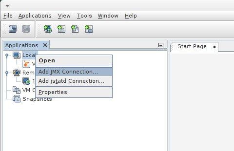
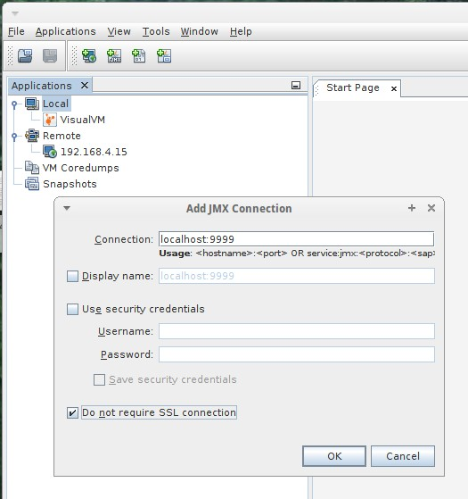
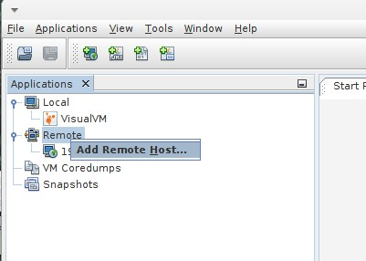
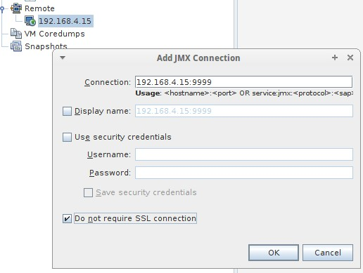

Deeper analysis of Orchestra

Topic content
jVisualVM
With jVisualVM it is possible to
•analyze the memory consumption of the Java virtual machine
•get a Heap Dump
•analyze the threads
•view the ThreadDump (this means what the threads are currently working on)
Note
▪jVisualVM is only available in the Java Development Kit (JDK)
▪the JDK must be the same Java version or newer as Orchestra is running
▪for a Heap Dump the JVM is suspended and the memory is written to a file
▪the size of a Heap Dump depends on the memory consumption of the Orchestra process (2 GB, 8 GB ...)
▪the Heap Dump file is stored on the server Orchestra is running, although jVisualVM is connected remotely
Tomcat configuration
These parameters have to be set in tomcat in order to use jVisualVM:
-Dcom.sun.management.jmxremote.port=9999
-Dcom.sun.management.jmxremote.ssl=false
-Dcom.sun.management.jmxremote.authenticate=false
Afterwards, you can connect with jVisualVM to the computer on port 9999.
If the server has several network interfaces, it may be necessary to bind the RMI process to a specific IP address:
-Djava.rmi.server.hostname=192.168.4.15
jVisualVM Local
If jVisualVM is started on the same machine Orchestra is running, use the context menu on the item Local to add a JMX Connection:

Insert here the configured port:

jVisualVM Remote
If jVisualVM is started remotely you have first to create the remote host. Get the context menu on the item Remote and call "Add Remote Host...".
Insert a IP address or the host name.

The next step is to add a JMX-Connection. Get the context menu on the selected remote host, select "Add JMX Connection ..." and insert the configured port:

Now jVisualVM is configured and you can make a double click to open the connection to the JVM of Orchestra.
Use jVisualVM
The screenshots below show how jVisualVM can be used. To get a Heap Dump use the Button Heap Dump in the right upper corner on the register Monitor.
This is the heap dump that can be seen in jVisualVM
To get a Thread Dump use the Button Thread Dump in the right upper corner on the register Threads.
This is the thread dump that can be analyzed in jVisualVM